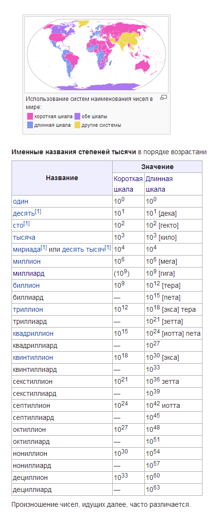

Вы умеете читать. Но есть слова непонятные. Как понять их? Спросить кого-нибудь. Может он тоже не знает? Тогда можно посмотреть в словаре.
Лучше сразу посмотреть в словаре, потому что человек может быть занят.
(может он думает о чём-нибудь важном)
А если слово такое сложное, что даже словарь не знает или объясняет непонятно? Можно разобрать слово на части и по частям понять что оно значит.
Но не нужно сразу разбирать слово на буквы. Часто слово состоит из других слов: самолёт значит сам-о-лёт, само-лёт, сам лётает, сам летает. В слове полёт тоже есть это “лёт” и где оно есть – там значит кто-то летает. Перелёт – это когда перелетают. Перелётные птицы перелетают туда, где теплей, когда наступает зима. Пере – это не слово. Может когда-то было им, но сегодня это приставка, пристрой к слову, который как пристрой к дому: без дома не бывает. “При” из слов приставка и пристрой бывает и отдельным словом: при этом есть похожая приставка пре-, которая отдельно пишется как пред, и означает перед. Но пред- бывает и приставкой: предупредить. В этом слове пред идёт два раза. Упредить значит опередить, но с небольшими отличиями: упредить это устаревшее слово, если воин поднял щит для защиты от стрел или меча, то он упредил удар. Если он сказал другим воинам, чтоб приготовились – сейчас полетят стрелы – он их предупредил, т.е. сделал это перед тем, как они упредили удар. Как глаза нас предупреждают о чём нибудь. Если мы бежим, а впереди что-нибудь опасное, глаза нас предупреждают, мы упреждаем столкновение останавливаясь или перепрыгивая или изменяя маршрут.
У в словах улетел, упредил и других – значит полностью. Когда оно используется отдельно, оно отвечает на вопрос где: у меня, у тебя, у бабушки. Но в слове улица буква у
В словах предупредил и предупреждают есть отличие во втором пред: так сделано для более красивой речи: слово предупреждать кажется более красивым, чем предупредают. Хотя предупредают более понятно, ведь видно, что что-то дают. Но нет слова предупре, потому никому эта понятность не нужна. Или так людям кажется. Дают –
1 – один, 2 – два, 3 – три, 4 – четыре, 5 – пять, 6 – шесть, 7 – семь, 8 – восемь, 9 – девять, 10 – десять,
11 – одиннадцать (один-над-цать, цать – это десять (мне так говорила бабушка, она была учительницей в школе, и я могу ей поверить: ц звучит как тс, словно кто-то писал очень быстро и неаккуратно, и tς превратилась в одну букву. ς – так когда-то записывали и в россии, во других странах этот звук s
